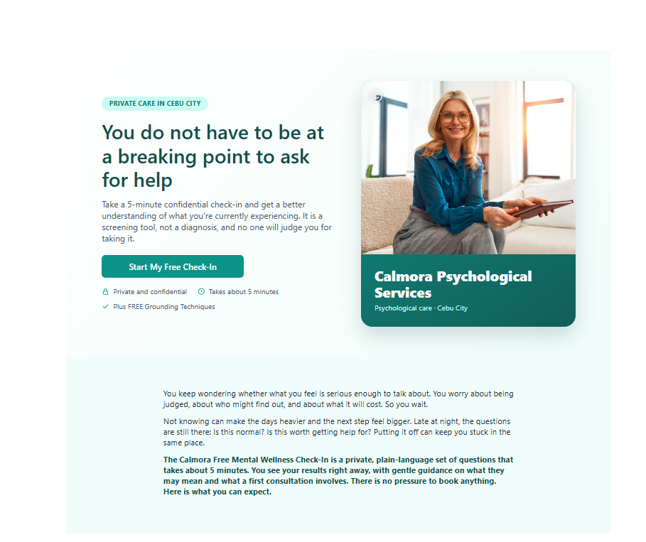
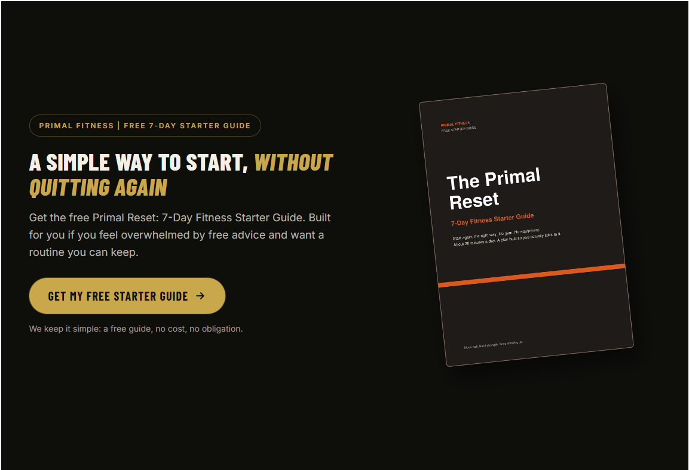
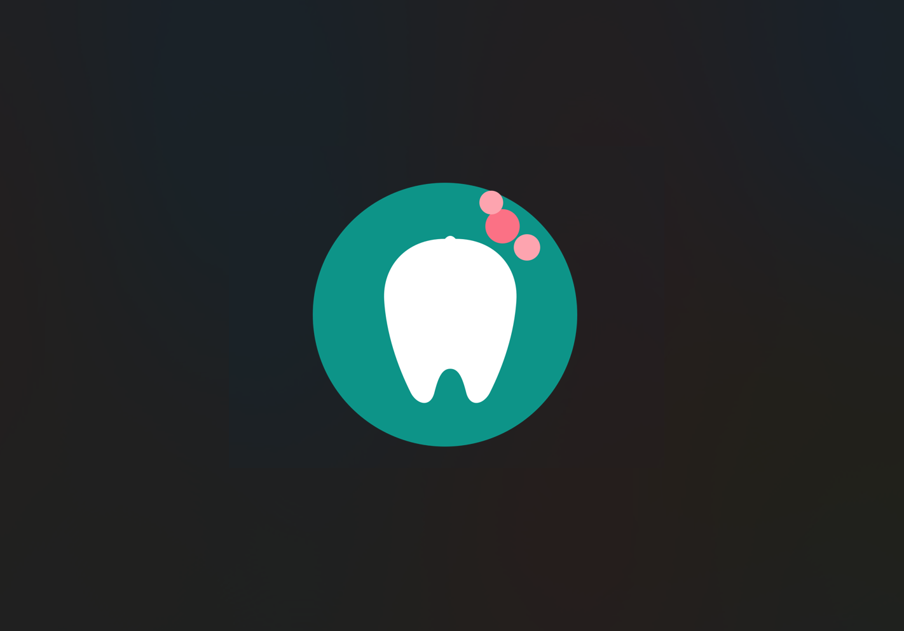
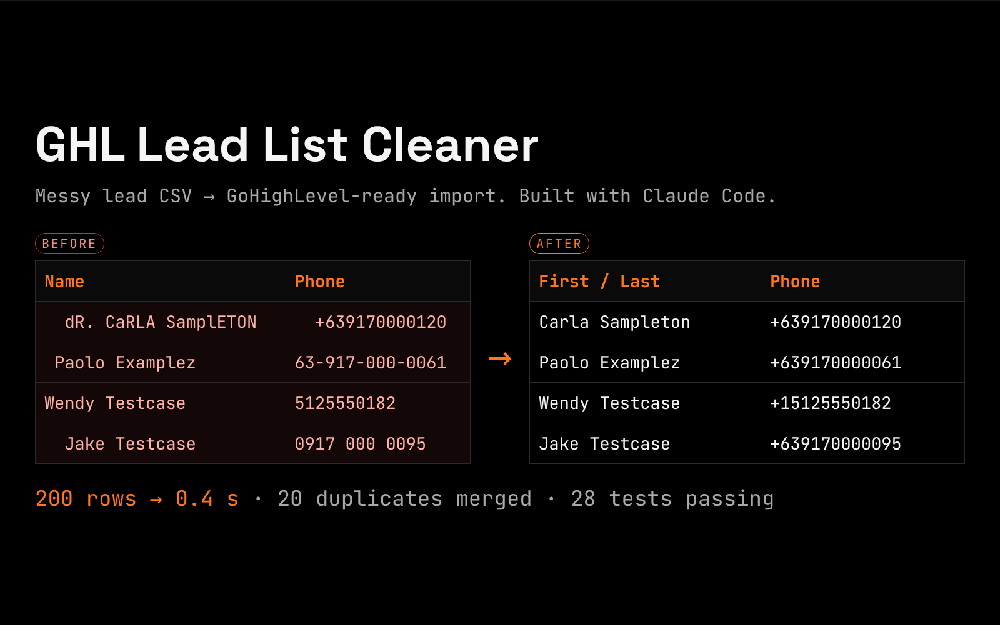
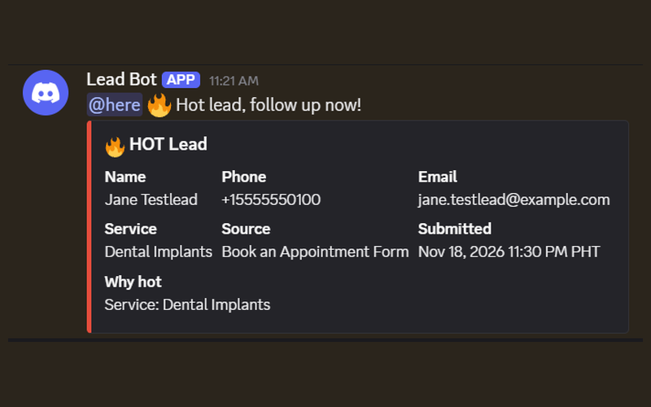

Calmora Psychological Services
Lead capture, calendar booking, reminder sequence, nurture emails, and abandoned-booking recovery for a Cebu City clinic.
Read case studyMarketing Automation Specialist
I build AI-powered automation in GoHighLevel that turns leads into booked calls. Funnels, CRM, email and SMS, booking flows. For coaches and clinics.
~/jared $ new_lead --source landing_page
✓ tagged, added to pipeline, follow-up queued
Five self-initiated builds: three GoHighLevel funnels and two AI-built tools. Each has screenshots and the reasoning behind it.

Lead capture, calendar booking, reminder sequence, nurture emails, and abandoned-booking recovery for a Cebu City clinic.
Read case study
Lead magnet and landing page for the Fatigued Dads audience, with the follow-up that moves a lead toward a call.
Read case study
Booking funnel for a Metro Manila dental studio, with reminders, 1h/24h/72h no-show follow-ups, and a whitening offer for attendees.
Read case study
A Python tool built with Claude Code. Turns messy lead CSVs into GHL-ready imports: fixes names, emails and PH/US/AU phones, and merges duplicates. 200 rows in 0.4 seconds.
Read case study
A webhook service built with Claude Code. Sends every new GHL lead to Discord and pings the team for hot leads. 10 of 10 live test leads alerted, 3.9 seconds on average.
Read case studyEach piece connects to the next. Nothing runs alone.
Landing pages and forms that feed your CRM.
Calendar setup with confirmations and reminders sent for you.
Stages and tags built around your business and customer.
Nurture sequences written for your persona and sent automatically.
Follow-ups for abandoned bookings, no-shows, and reschedules.
Review requests, reactivation, and a simple dashboard.
AI makes the first draft. I make the decisions. These are the skills I use and where each one stands.
Skills that turn a client brief into strategy docs, funnel maps, and workflow specs. With Claude Code, I built and tested a lead list cleaner for GHL imports and a live lead alert service that sends GHL leads to Discord. I review every output.
Proof: 2 live buildsGoal, Context, Action, Output. One structure for prompts, so drafts come back usable.
Building proofFirst drafts of landing pages, emails, and SMS in the client’s voice. I edit all of it.
Building proofA chat on this site that answers questions and points visitors to a call. It runs on a fixed FAQ for now.
Building proofEvery skill here is labeled by what I can prove today. No client results yet. The case studies are self-initiated builds and tests on fake data.
We talk on a call. I learn your offer, customer, and goals.
AI Call notes become a short brief.
I draw the funnel and pipeline first. You approve it.
AI First draft of the funnel and pipeline.
I build in GoHighLevel. AI drafts the copy, I edit it.
AI Copy drafts for pages, emails, and SMS.
I test every path. You get a recorded walkthrough.
AI Test checklists for every path.
Async-first. Weekly update by email. Nothing moves forward without your approval.
I’m Jared. I turn leads into bookings with GoHighLevel automation. I work with coaches, clinics, and local service owners who are tired of manual follow-up. AI drafts. I edit everything.
Based in the Philippines. Working async, with overlap for US and Australian clients by arrangement.
Pick a time, or email me. I reply within one business day.